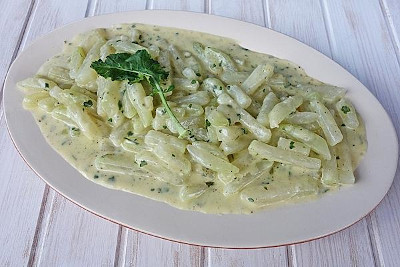

Rahm Kohlrabi

Description
Creamy side dish. Best with meatloaf or meatballs.
Ingredients
- 3 x turnip cabbage
- 1 tbsp butter
- 1 tbsp flour
- 2 teaspoons vegetable broth, instant
- 150 ml sweet cream
- Salt and pepper, white from the mill
- Nutmeg, freshly grated
Steps
- Peel the turnip cabbage and cut into sticks
- Boil in lightly salted water for about 20 minutes
- Drain and reserve 250 ml of the cooking water
- Fry the turnip lightly in the butter and dust the flour over it
- Sweat lightly and deglaze with cooking water and cream
- Sir in the vegetable stock and let the sauce simmer for 2 minutes
- Season with salt, white pepper and nutmeg